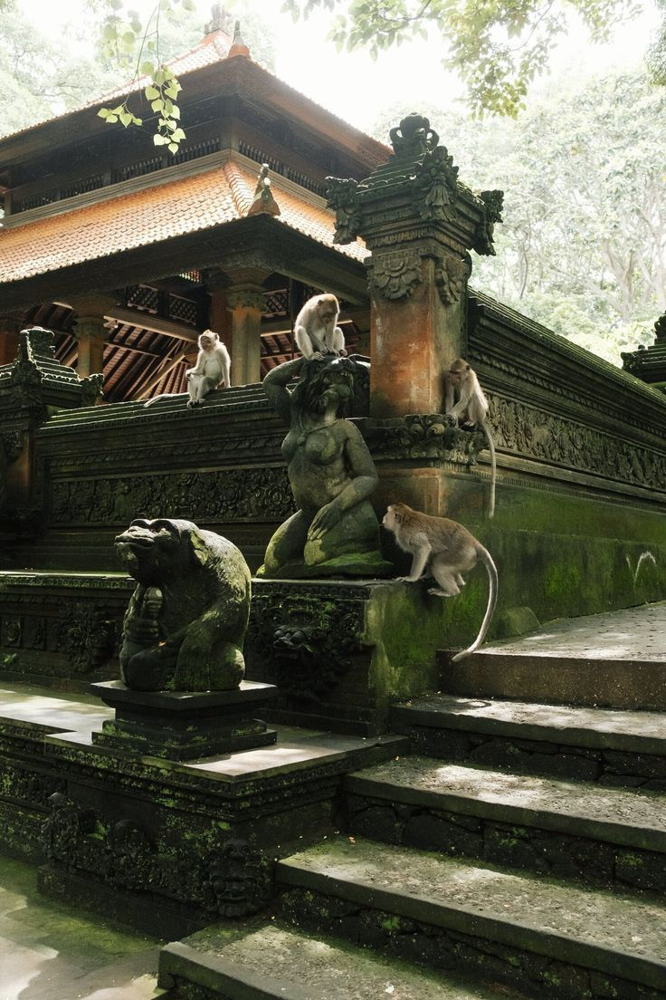

Mandala Suci Wenara Wana atau disebut juga Monkey Forest Ubud merupakan sebuah tempat cagar alam dan kompleks candi yang terletak di desa Padangtegal Ubud, Bali. Di tempat ini mempunyai kurang lebih 1260 ekor monyet ekor panjang (Macaca fascicularis) (63 jantan dewasa, 34 jantan muda, 219 betina dewasa, 29 betina muda, 167 juvenile 1 (2-3 tahun), 118 juvenile 2 (1-2 tahun), 63 Infant old (5-12 bulan) dan 56 infant.
SEJARAH MONGKEY FOREST BALI
Monkey Forest Ubud, atau dikenal sebagai Sacred Monkey Forest Sanctuary, adalah kawasan hutan suci di Ubud, Bali, yang memiliki nilai spiritual, ekologis, dan wisata yang tinggi. Tempat ini bukan hanya sekadar habitat monyet ekor panjang (Macaca fascicularis), tetapi juga merupakan situs purbakala yang berakar dalam budaya dan kepercayaan masyarakat Bali.
 SEJARAH
SEJARAH
ASAL USUL & LATAR BELAKANG
Monkey Forest Ubud berada di Desa Padangtegal, Ubud. Kawasan ini sejak dahulu kala dianggap sebagai tempat suci yang digunakan untuk upacara keagamaan dan ritual Hindu. Diperkirakan, kompleks pura di dalam Monkey Forest telah berdiri sejak abad ke-14, pada masa kejayaan Kerajaan Pejeng dan Kerajaan Gelgel. Hutan ini dikelola oleh masyarakat setempat dengan konsep Tri Hita Karana, yaitu filosofi Bali yang menekankan keseimbangan antara:
1.Manusia dengan tuhan (melalu pemujaan di hutan)
2.Manusia Dengan Alam (melalui pelestarian lingkungan)
3.Manusia Dengan Sesama (melalui hubungan Sosial)
 ASAL USULMONYET SEBAGAI SIMBOL SPIRITUAL
Monyet ekor panjang yang hidup di Monkey Forest bukan hanya bagian dari ekosistem, tetapi juga memiliki makna spiritual. Dalam kepercayaan Hindu Bali, monyet sering dikaitkan dengan Hanoman, dewa berbentuk kera dalam wiracarita Ramayana yang melambangkan kecerdasan, keberanian, dan kesetiaan. Masyarakat setempat percaya bahwa monyet-monyet ini adalah penjaga pura dan tidak boleh diganggu atau disakiti. Oleh karena itu, mereka dibiarkan hidup bebas di dalam hutan.
TRANSFORMASI MENJADI DESTINASI WISATA
Dahulu, Monkey Forest hanya dikenal sebagai kawasan suci bagi penduduk lokal. Namun, sejak pariwisata Bali berkembang pesat pada abad ke-20, tempat ini mulai menarik perhatian wisatawan. Pada tahun 1986, masyarakat Desa Padangtegal secara resmi mengelola Monkey Forest sebagai kawasan konservasi alam dan budaya. Mereka menetapkan aturan khusus untuk melindungi ekosistem hutan serta memastikan keberlangsungan pura dan tradisi keagamaan. Saat ini, Monkey Forest Ubud menjadi salah satu destinasi wisata paling populer di Bali, menarik ribuan wisatawan setiap tahunnya yang ingin melihat keindahan hutan, monyet liar, dan arsitektur pura yang megah.